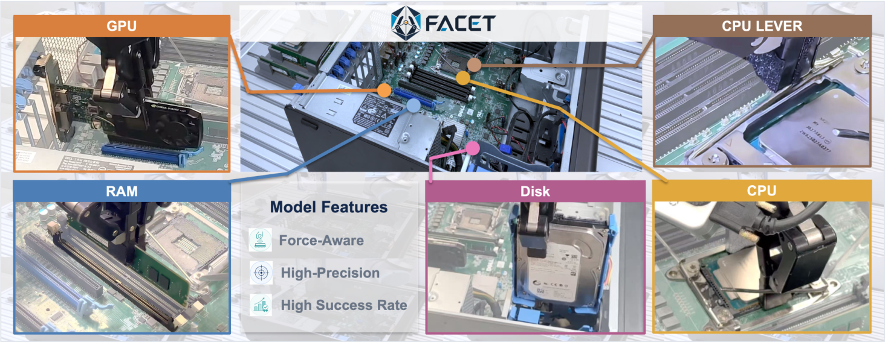

서브밀리미터(0.5mm) 컴퓨터 조립처럼 접촉-풍부(contact-rich) 조작을 위한 로봇 파운데이션 모델. 액션과 미래 손목 wrench(6축 힘/토크)를 함께 예측(joint action-wrench flow matching)하고, Action-Wrench Critic이 겉으로는 비슷하지만 접촉 품질이 다른 두 궤적을 구분해 가치를 매긴다. 컴퓨터 부품 5개 삽입 태스크 평균 82%(최강 baseline 15%, 5.5×). value-guided post-training으로 20→65% 성공률, 새 부품 few-shot(10 demo, 3h) 45% vs baseline 5%(9×).
1배경 · 문제의식
지금까지 VLA(Vision-Language-Action) 파운데이션 모델들은 "손이 물체 근처에 도달"까지는 잘 하지만, 0.5mm 급 정확도의 삽입(RAM·CPU·GPU·Disk·CPU LEVER 등)처럼 접촉이 결정적인 순간에는 무너진다. 시각으로는 "잘 들어가고 있음"과 "걸려서 꽉 낀 것(jam)"이 같은 깊이·같은 자세로 보이기 때문이다. 저자들은 접촉 정보(wrench = 손목의 3축 힘 + 3축 토크)를 예측 대상에 포함시켜 이 두 상태를 구분한다.
직관: 사람이 조립할 때도 "느낌"으로 걸림을 판단한다. Facet-0의 핵심 아이디어는 정책이 "다음 액션을 하면 어떤 힘/토크가 손목에 걸릴지"를 미리 예측하게 만들고, 그 예측된 wrench까지 함께 평가하도록 critic을 훈련시키는 것.
2핵심 Contribution
Joint Action-Wrench Flow Matching — 액션 chunk(7-D)와 그로 인한 예상 wrench 프로파일(6-D)을 같이 flow matching으로 생성. 접촉을 관찰 후 반응이 아니라 액션의 부속 예측 대상으로 격상.
Action-Wrench Critic — 액션·wrench 조합을 함께 스코어링하는 distributional value function. 겉으로 같은 진행도라도 "깨끗한 삽입"과 "걸린 상태"를 구분해 다른 가치를 준다.
Lightweight Bounded Local Adaptation — 배포 시 파라미터의 6.6%인 작은 actor만 학습. base 표현은 동결, wrench head는 auxiliary(예측만, force 명령 없음). 새 부품 few-shot에 강함.
ManuFacet-1K 데이터셋 — 힘 동기화 1,000시간 (3개 embodiment, 2개 chassis family, 다중 제조 현장, 6축 wrist F/T + 3 RGB 카메라 동일 스펙, 7-phase 조립 taxonomy).
3Method
Joint action-wrench 예측 — flow matching 이란
Flow matching은 "무작위 노이즈 ε에서 목표 데이터 x로 이어지는 경로 xt = (1−t)ε + t·x의 시간 미분(속도 필드)을 신경망으로 학습해, 몇 스텝 만에 노이즈 → 데이터를 만드는 생성 방식"이다. Facet-0은 목표 벡터를 13-D(액션 7-D + wrench 6-D)로 두고 이 결합 벡터의 velocity를 학습. 액션과 wrench가 각각 다른 스케일이므로 loss normalization을 분리해 한쪽이 나머지를 압도하지 않게 한다. 결과: 정책이 액션을 뽑을 때 "이 액션을 실행하면 손목에 이런 힘·토크가 걸린다"는 예측을 동시에 산출.
Action-Wrench Critic — 왜 필요한가
직관: "GPU를 슬롯에 절반 넣은 상태"와 "잘못된 각도로 걸려서 절반만 들어간 상태"는 카메라 이미지에서 거의 같다. 하지만 wrench는 다르다 — 걸린 쪽은 옆으로 큰 저항력이 뜬다. Critic이 액션+wrench를 함께 보면 이 둘의 값이 갈라진다.
Distributional value function을 써서 결과 분포까지 학습(단일 스칼라 대신). "동일한 geometric progress를 가진 두 궤적도 wrench가 다르면 다른 value"를 받게 되어, RL 업데이트 시 깨끗한 삽입 궤적에 더 큰 credit을 준다.
Bounded Local Adaptation (배포 시 학습)
Semantic-contact 표현은 동결 — 사전학습에서 배운 "이 픽셀이 부품이고, 여긴 접촉면"이라는 개념을 그대로 유지.
얇은 actor(6.6% 파라미터)만 학습 — 새 부품·새 chassis에 맞춰 bounded Cartesian target을 뱉는 작은 head만 fine-tune. bounded의 의미는 "액션 범위를 안전 상한/하한으로 클램프해 상하좌우 폭주 방지".
Auxiliary wrench head — 새 actor도 wrench 예측을 계속 유지(단, 실제로 force를 명령하지는 않고 예측만 함) → 예측-액션 커플링 보존.
Value-Guided Post-Training(배포 데이터로의 RL)
배포 중 수집되는 rollout을 contact-selective로 credit 부여(접촉/자유공간 구간을 분리해 랭킹). 이러면 "실패 직전 회복(recovery)" 같은 희귀하지만 중요한 프레임을 살려 policy 학습에 반영. Advantage-weighted behavior cloning(같은 데이터, 다른 학습 규칙)과의 정면 비교로 우위 확인.
0.5mm 정밀도 요구 태스크에서 5.5–17× 격차. 특히 GPU 삽입(85% vs 5%)과 LEVER(50% vs 5%)처럼 접촉 순간 힘 제어가 핵심인 태스크에서 격차가 극단.
모듈별 기여 (ablation)
구성
성공률
Semantic-contact alignment만
16%
+ Value-guided RL
38%
+ Local adaptation (전체)
82%
각 요소가 +22%p, +44%p 이득 — 특히 local adaptation의 기여가 가장 크다. semantic-contact alone은 접촉 인지만으로는 부족하고, value-guided RL과 얇은 로컬 adaptation이 조합돼야 서브밀리미터 정밀도가 나옴.
Value-guided post-training vs Advantage-weighted BC
지표
Baseline (AWBC)
Facet-0 (value-guided)
Success rate
20%
65%
Recovery rate (실패 회복)
44%
81%
Human intervention
47%
24% (더 낮을수록 좋음)
동일 데이터·다른 규칙 비교. contact-selective credit이 recovery 프레임을 살려 성공률·자율성 모두 상승.
새 부품 few-shot 전이
보지 못한 부품(더 무겁고 latch가 뻑뻑함) 10 데모 + 3시간 on-robot 학습:
Facet-0: 45% vs 최강 baseline 5% (9×)
업데이트되는 파라미터: 6.6% vs baseline의 100%
frozen 표현이 "같은 개념(부품·삽입)"과 "달라진 것(무게·latch stiffness)"을 분리해 잔여 학습을 최소화. bounded actor가 안전한 탐색 영역을 유지.
Contact 기능 제거 ablation (RAM insertion)
상태
성공률
Peak off-axis force (정규화, 1×=force-free baseline)
Full Facet-0
95%
0.2×
Contact 기능 모두 제거
45%
1.0×
wrench 예측·critic·adaptation의 auxiliary wrench 세 축을 다 빼면 -50%p 성공, off-axis 힘 5× 증가. 접촉 정보 활용이 정밀도와 안전성 모두에 기여.
5Ablation (핵심 요약)
Wrench 예측이 vision-only 정책의 한계선을 뚫는다: GPU insertion 85 vs 5, LEVER 50 vs 5. "카메라만으로는 걸림/삽입을 구분 못 함"이라는 가설의 직접 증거.
세 모듈이 각각 큰 기여: 16→38(value RL, +22)→82(local adaptation, +44). 하나만 붙이면 부족, 조합 시 서브밀리미터 정밀도 달성.
Value-guided RL은 recovery를 살린다: contact-selective credit이 실패 직전 회복 프레임 가치를 보존. 결과적으로 human intervention 47→24로 절반.
Frozen 표현이 few-shot 전이의 핵심: 100% 학습 baseline과 정면비교 시 9× 격차, 학습 파라미터는 15× 적음.
6핵심 Figure / Table

Figure 1 — Facet-0 in precision computer assembly. GPU · RAM · Disk · CPU · CPU LEVER 등 서브밀리미터 조립 태스크와 로봇 워크셀. 각 부품이 요구하는 삽입 정확도와 clearance가 다름. (출처: arXiv:2609.01596)
Figure 4 — Action-Wrench Critic이 clean insertion과 jam failure를 구분. GPU 삽입 시 시각적으로 동일한 깊이의 두 상태를 wrench 정보 결합 critic이 서로 다른 value로 판정 — vision 단독으로는 불가능. (출처: arXiv:2609.01596)
논문의 단일 최강 근거는 GPU insertion(85 vs 5)과 LEVER(50 vs 5)의 격차 — 접촉이 결정적인 태스크에서 vision-only 정책은 사실상 실패하고, wrench-aware 정책만 성공한다는 것.